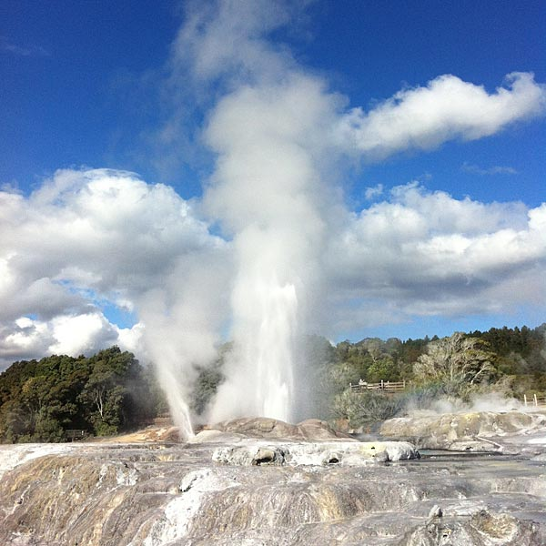
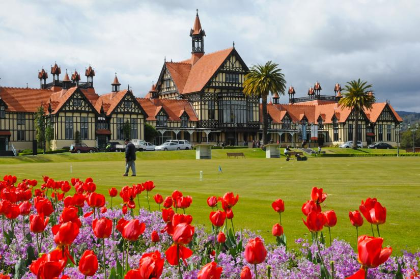
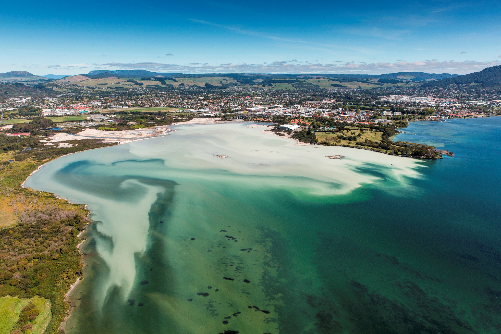
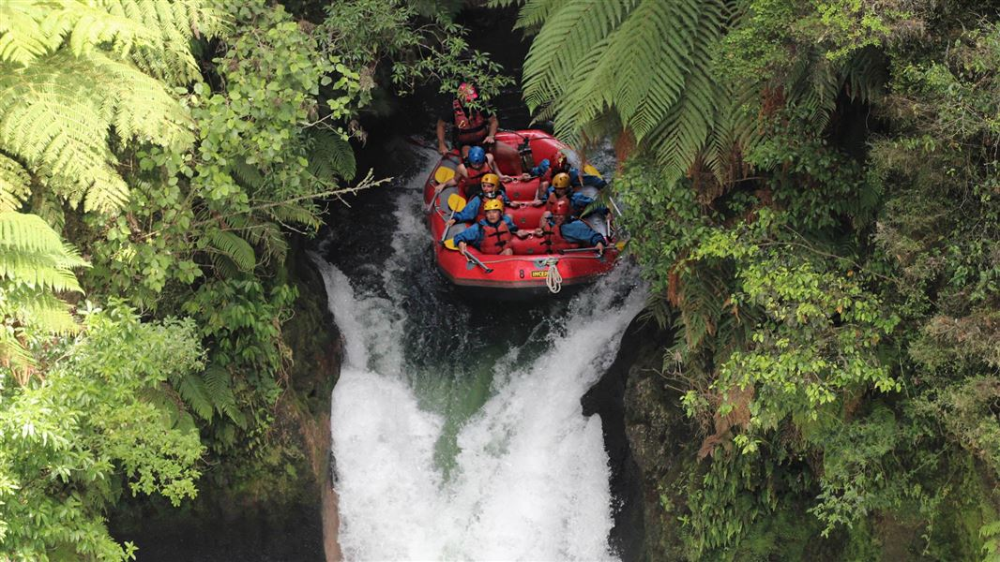

Kia Ora
Welcome to an official page of Tourism in New Zealand




Rotorua is the lifestyle destination of choice for professional couples, families and people that have a passion for life and the
outdoors. It is New Zealand’s playground and a draw card to millions of visitors from around the world. Rotorua is a small city,
compact, safe and easily accessible to nearly 50% of the country’s population.
I have just came to the New Zealand in student visa and heard alot of Rotorua which has made me to go there once. I a planing to in Summer
I want go to the Lakeland Queen stern wheel paddle boat and large cruising vessel operating on the iconic Lake Rotorua with two deck levels that can
accommodate up to 200 seated guests in comfort, the cruise offers a truly unique dining experience. Also, planing to go the Taupo Waitomo Caves for the
boat tour down the river and to the Okere falls has become a favourite place for locals to gather for a craft beer, entertainment, and unique specialty
items. Kids are invited to play while adults are invited to grab a drink or snack, sit back, and enjoy their nostalgic surroundings. There’s even a
beer garden! Visitors are always warmly welcomed to join in the fun at the local’s best kept secret which mad eme go there. Lastly, to
Rotorua Museum to know about the Maori culture, arts, cravings and histrorical things.